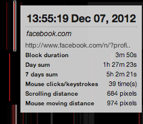
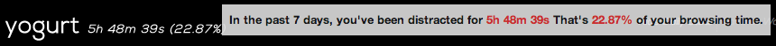
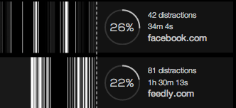
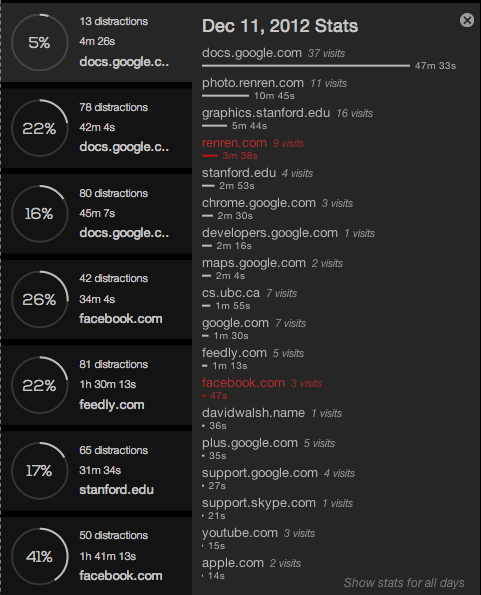
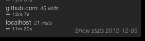

Yogurt is a Chrome extension that visualizes your online browsing history aiming to raise awareness of online distraction.
Yogurt is safe: it is 100% local extension, It does not record and share personal information.
Yogurt is non-intrusive: it does not block any website, it does not pop up annoying notification, it only shows distraction history in a delectable way.
Yogurt is light-weight: Yogurt is designed to be fast, meaning that it doesn't add overhead to your regular browsing experience and does not slow down your web browser.
Yogurt is simple: it provides the information you care in a clear, easy-understanding way.
Yogurt is inspired by DNA art. Since one's online behavior is a part of himself, which is also unique and personal, It is very interesting to display his online behavior in this similar format. Yogurt can bring user the awareness of online distraction in a modest, friendly way via artistic appearance, and keep the information with the feeling of mystery for personal privacy.
In order to detect your online activities, Yogurt tracks attention flows by auditing in-browser events. More specifically, only the attention flow of the current tab you're staying on will be tracked. When you switch to another tab, a new flow will be established while the current one will be closed. When you are working on other programs rather than chrome, the attention flow will be closed and that period will be marked as "Not in browser".
Then the data Yogurt has collected will be visualized via SVG using D3.
Yogurt is a local Chrome extension. All your browsing data is locally stored and can only be accessed by you. Moreover, Yogurt only counts the amount of your in-browser actions (such as clicking, scrolling etc.), it never records or stores the information you type in.
To start using Yogurt, go to "Distraction Domains" tab, add sites you deem as distractive and set their distraction levels.
Then simply keep it enabled in your Chrome. It will track your browsing behavior silently.
When you've been using Yogurt for some time, you can view the visualization of your distraction history by clicking on the Yogurt icon on your Chrome toolbar.
You'll see 7 rows of illuminated stripes (Note that you might not have enough stripes showing because you don't have lots of browsing histories) , each row representing one of the past seven days. Every stripe represents a time duration you spent on a particular site. If there's no stripe there, you were not in browser at that time. The wider the stripe is, the longer time you spent. The brighter it is, the higher level of distraction that site is, which can be configured in the settings page.
Move your mouse over those stripes, you will see more detailed information.
If you're curious about exactly what site has consumed so much of your time, clicking on the stripe will bring you to that page in a new tab.
You may already notice the numbers beside Yogurt's logo, hover over it you can see its explanation.
Curious about how are you doing every day? Click on "Show Daily Stats", you can check out the daily stats on the right.
The percentage inside the circle is the total distraction time divided by your total in-browser time.
What are the sites that took most of your time? A ranked list will tell you. To see it, click on the daily stats block.
The distraction sites defined in the settings will be highlighted in red.
If you click on the link "Show stats for all days" at the bottom, a similar list aggregating the stats of 7 days will be shown. You can toggle back to daily stats by clicking the similar link at the bottom.
Love the visualization of your distraction history? Save it as wallpaper! All you need to do is click "Save as Wallpaper" on the upper left and select a resolution.
You can change your color theme any time in your options. Refresh Yogurt plugin page and there you go!
Now, start enjoying Yogurt, a healthier Internet diet!